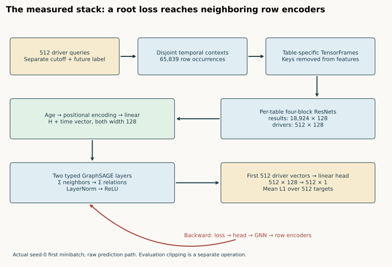
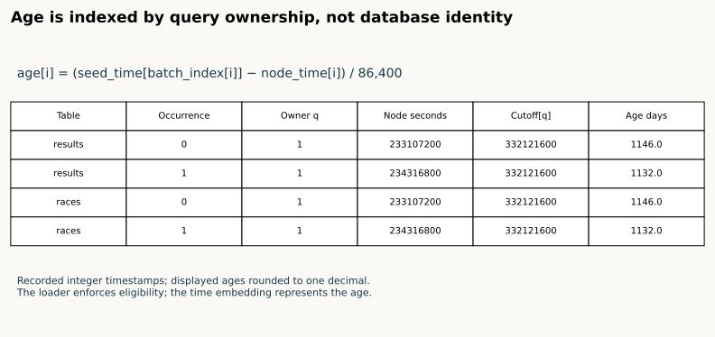
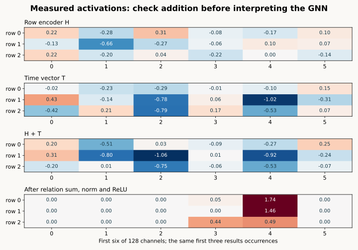
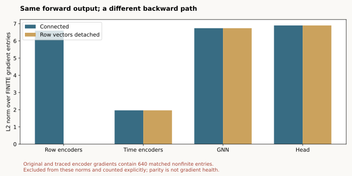
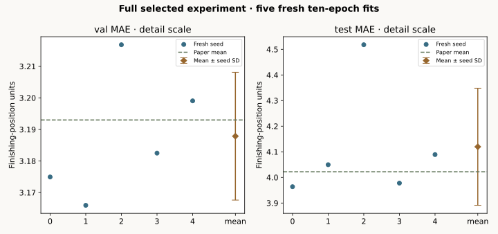

Year 4 · Quarter 2 · Lesson 131
GNN + tabular encoder stack: trace the forward and backward pass
The question this lesson answers¶
Can you follow one prediction through the actual network, and show how its loss changes the row encoders? Lesson 130 established ownership of the experiment. This lesson opens the computation inside that experiment. Your deliverable is an annotated forward/backward trace with real tensor shapes, a checked gradient path and a defensible reproduction verdict.
Student notebook · Executed solution · Reference card · Reproduction contract
Before reading: which rows receive labels? Why can one driver appear several times in a minibatch? Does freezing a row encoder necessarily change today's prediction?
Read Fey et al., §5, relational deep learning blueprint for the decomposition. Use Robinson et al., RelBench v1 §3, Appendix B and Table 7 for the implemented baseline and numerical target. These are different sources with different jobs: the blueprint motivates the stack; the benchmark specifies the selected experiment.
Route. First predict shapes on paper. Then trace the measured batch and complete the three functions. Run the short standalone notebook to inspect the author evidence and a small neural parity fixture. Finally use the explicit full-training gate for five fresh fits. The default replay, small fixture and full reproduction have separate evidence labels.
1 · Model architecture: a batch is a collection of questions¶
A query is (driverId, cutoff). Its label is mean finishing position in the next 60 days. The full experiment contains 7,453 training, 499 validation and 760 test queries. A context node is a permitted database row that helps answer a query. It is not another supervised example.
The loader builds disjoint contexts for 512 queries at a time. A database row reused by two queries becomes two node occurrences, each with its own query owner and time cutoff. n_id maps an occurrence back to its database row; batch maps it to a query; input_id maps a supervised query back to the task table. These indices answer different questions.


Diagram trace. Trace the forward values and backward gradient path separately. Where would detaching preserve the current prediction but stop encoder learning? On a narrow screen, scroll the figure sideways.
The graph has nine table types. Each table owns a separate four-block Frame ResNet. Its output width is 128 regardless of how many raw columns that table has. Parameters are shared across occurrences of rows from the same table, but not across different table encoders. A row encoder can therefore process drivers and results with different input schemas while delivering compatible vectors to the graph network.
Time encodings are added to dated rows. Two heterogeneous GraphSAGE layers exchange information along foreign-key and reverse edges. Each relation uses neighbor sum aggregation in this experiment; relation outputs are also summed for each destination type. Node-wise LayerNorm and ReLU follow each layer. The scalar head reads only the first B driver vectors.
Predict. If the sampled batch contains 512 query roots and thousands of context occurrences, how many predictions and loss terms should it produce? Write the answer before inspecting the trace.
| Table | Actual row occurrences | Encoded shape |
|---|---|---|
| races | 21,939 | [21939, 128] |
| drivers | 512 | [512, 128] |
| constructor_standings | 0 | [0, 128] |
| standings | 21,059 | [21059, 128] |
| constructors | 1,380 | [1380, 128] |
| constructor_results | 0 | [0, 128] |
| circuits | 0 | [0, 128] |
| qualifying | 2,025 | [2025, 128] |
| results | 18,924 | [18924, 128] |
The root head returns [512, 1]; this first-batch raw L1 loss is 13.797042. First three predictions: 0.1245, -0.1279, 0.0334.
These are observed shapes from the first real training minibatch before any optimizer update. They are not the 99-node exhaustive single-query neighborhood used in Lesson 130. Sampling, query multiplicity and node type all affect the counts.
2 · From typed columns to row vectors¶
A TensorFrame groups columns by semantic type. Numerical values receive learned linear encodings; categorical values use embedding lookups; timestamps have their own encoding; precomputed text embeddings receive a learned projection. The ResNet combines those column representations into a row vector. Primary and foreign keys define identity and connectivity and are removed from feature columns by the released graph builder.
Lesson 125 opened the row encoder. Here its output becomes the GNN's input. The question changes from “how is this row represented?” to “how can a root's loss train a representation of a neighboring row?”
TODO 1 — activation_summary. Report shape, mean, maximum absolute value, zero fraction and a small coordinate sample. Detach only the copy used for logging. Replacing the live activation with its detached copy changes training. Reject nonfinite forward activations explicitly; an empty tensor has no numerical mean.
The canonical code is visible in the notebook, including the typed encoders and ResNets. Read-only primitive source is included alongside its license and pinned provenance. No opaque model import is the sole explanation of the computation.
3 · A node occurrence carries its owner's clock¶
For node occurrence i owned by query q, its age in days is (cutoff[q] − node_time[i]) / 86400. The index q is batch_index[i], not the table row ID. Looking up the first query's cutoff for all rows silently misrepresents a disjoint batch.


TODO 2 — relative_days. Validate the owner indices and tensor lengths, gather the correct root cutoff, reject a future row and convert seconds to days. The real trace replay calls your function on recorded timestamps. Static tables without timestamps receive no invented age.
Predict before changing the control. In the synthetic example, query cutoffs are days 10 and 20; node times are days 9 and 18; owners are 0 and 1. Correct ages are 1 and 2. What happens if both occurrences use query 0's clock?
The model applies a positional encoding to each age, followed by a table-specific linear layer, and adds the resulting 128-vector to the row representation. This addition does not enforce eligibility; the sampler and temporal audit do. A learned time vector cannot repair a future row that was incorrectly admitted.


Read the first row as an arithmetic check: the same occurrence's encoded features plus its time vector must equal the vector passed into message passing. Later channels mix through learned matrices, so channel 0 is not a conserved semantic feature.
4 · Message passing changes representations; the head selects roots¶
For relation r from source type s to destination type t, the released sum-GraphSAGE operator computes a learned transform of the summed neighbor features plus a learned transform of the destination's own features. HeteroConv sums these relation outputs for destination t. Because each relation has its own root transform, the root contribution is also repeated across incoming relation types. This is the pinned implementation, not an assumed generic GNN equation.
After relation summation, node-wise LayerNorm normalizes each row across its channels and ReLU sets negative coordinates to zero. The next layer repeats this process. Two rounds make two-hop input information available to a root. The released wrapper accepts sampled-size metadata but its forward implementation processes the supplied node and edge dictionaries without trimming them layer by layer.
def traced_forward(model, batch, entity_table, detach_encoder=False):
trace={};seed_time=batch[entity_table].seed_time
def record(stage,values):
trace[stage]={k:activation_summary(v) for k,v in values.items()}
x=model.encoder(batch.tf_dict)
record('row_encoder',x)
if detach_encoder:x={k:v.detach() for k,v in x.items()}
times={};days={}
for kind,node_time in batch.time_dict.items():
days[kind]=relative_days(seed_time,node_time,batch.batch_dict[kind])
times[kind]=model.temporal_encoder.lin_dict[kind](model.temporal_encoder.encoder_dict[kind](days[kind]))
record('relative_days',days);record('time_encoder',times)
x={k:v+times[k] if k in times else v for k,v in x.items()}
for kind,embedding in model.embedding_dict.items():x[kind]=x[kind]+embedding(batch[kind].n_id)
record('time_added',x)
for layer,(conv,norms) in enumerate(zip(model.gnn.convs,model.gnn.norms),1):
x=conv(x,batch.edge_index_dict)
record(f'layer_{layer}_relation_sum',x)
x={k:norms[k](v) for k,v in x.items()}
record(f'layer_{layer}_normalized',x)
x={k:v.relu() for k,v in x.items()}
record(f'layer_{layer}_relu',x)
roots=seed_readout(x[entity_table],int(seed_time.size(0)))
prediction=model.head(roots)
record('root_readout',{entity_table:roots});record('prediction',{entity_table:prediction})
return prediction,trace
TODO 3 — seed_readout. Return hidden[:B], reject invalid B, and preserve autograd. This works because this loader places the query roots first in their entity type. It is a loader contract, not a rule that any arbitrary graph tensor satisfies. Context driver rows after the roots must not receive the task's root labels.
In the recorded first batch, all 512 driver occurrences are roots, so an incorrect “all driver rows” readout could pass that example accidentally. The CHECK deliberately supplies five driver rows but only two roots; it verifies both output count and which rows receive gradients.
The head maps [B,128] to [B,1]. Training uses mean L1 over B query labels. Evaluation additionally clips predictions to training-label percentiles. Do not put evaluation clipping into the training-loss trace: it would describe a different gradient.
5 · The backward pass explains what is learned¶
Backpropagation applies the chain rule from the root loss through the head, graph layers, time addition and row encoders. A context row can receive a gradient even though it has no direct task label: its representation contributed to a supervised root. Shared table parameters accumulate contributions from all their occurrences.
The trace uses three isolated copies of the same model on the same real batch and random state: the original forward, the explicitly instrumented forward, and a version that detaches encoded rows. It compares outputs, loss, gradient presence, nonfinite masks and finite gradient values. The original fit's parameters, buffers and random state are preserved.


Predict. Detach the row vectors immediately after encoding. Will the current prediction change? Will the row encoder receive gradients? Will the GNN still receive gradients?
Measured caveat. The seed-0 original and traced models both contain 640 nonfinite gradient entries, in encoder.encoders.results.encoder.encoder_dict.numerical.weight. Nonfinite masks match; the maximum finite gradient discrepancy is 1.19e-07. The initial pilot checker stopped on these NaNs. The corrected audit checks mask equality and finite values separately, and retains the original algorithm. This is source parity with an exposed pathology, not a claim of healthy gradients.
The pinned StypeEncoder.forward applies nan_to_num after feature encoding. A separately executed minimal example, nan_to_num(w * NaN), produces zero forward output but a NaN gradient for w. This explains how finite activations can coexist with nonfinite gradients; the diagnostic is separate from the five-seed benchmark. Repairing the encoder would be a new experimental variant.
A gradient norm describes local sensitivity under this batch and parameter state. It is not a causal feature attribution or a universal importance ranking. A missing gradient, a zero finite gradient and a nonfinite gradient are different observations; the trace keeps them separate.
Failure diagnosis. Explain why each bug is caught by a different check: (1) all context rows reach the head; (2) all nodes use the first root cutoff; (3) an activation logger replaces live tensors with detached values. A passing shape check alone does not catch all three.
6 · Reproduce the complete selected experiment¶
The named target is RelBench v1 Table 7, basic RDL on rel-f1/driver-position: five fresh seeds, ten complete epochs each, full graph and official query splits. The pinned model uses width128, two layers, fanouts [128,64], uniform temporal sampling, batch512, Adam0.005 and mean L1. Choose the first strictly improved validation MAE checkpoint. Evaluate the frozen checkpoint and independently rescore every prediction by exact query identity.


Fresh selected released-protocol experiment: COMPLETE.
| Split | Mean MAE | Sample seed SD | Paper mean | Descriptive verdict |
|---|---|---|---|---|
| val | 3.187860 | 0.020249 | 3.193 | CLOSE |
| test | 4.119595 | 0.228565 | 4.022 | CLOSE |
| Seed | Selected epoch | Final validation MAE | Test MAE |
|---|---|---|---|
| 0 | 10 | 3.174941 | 3.963691 |
| 1 | 10 | 3.165964 | 4.049560 |
| 2 | 10 | 3.216836 | 4.517951 |
| 3 | 10 | 3.182499 | 3.977688 |
| 4 | 7 | 3.199059 | 4.089087 |
All 6,295 final predictions independently scored and compared with the original model. 403,895 sampled query occurrences audited. Successful pilot plus five-fit worker resource estimate USD 0.061831; failed pilot and notebook validation are accounted separately within the aggregate budget, with unitemized overhead. Measured summary.
Portable full-training gate: PASS. All 24 notebook code cells executed in a separate pinned GPU environment, including five fresh fits and five stack traces. Its predictions were independently rescored; these validation runs are separate from the primary results above. The preempted attempt is preserved. Gate verification. Live Colab remains NOT_CHECKED.
The reported closeness uses a predeclared absolute mean tolerance of 0.2 MAE. Seed SD is descriptive variability, not a confidence interval or a proof of equivalence. Final validation scores can differ from checkpoint-selection scores because evaluation resamples neighborhoods.
What “full” covers here. Every prescribed run, epoch, database row and final task query in this selected released-protocol experiment. It does not cover the paper's other 29 tasks. Exact historical training commit, seeds and runtime are not established. Released [128,64] fanouts differ from the paper table's 128; feature statistics use the database through the test cap; original arrival and mutable-feature histories are unavailable. Numerical agreement does not erase these gaps.
The protocol ledger contains exact commands, archive hashes, source revision, budget reservations, the failed pilot and successful recovery, and the distinction between paper, local fixture, instrumented batch and full-data evidence. Instrumentation findings do not silently change the released algorithm.
7 · Your annotated trace and written defense¶
Submit the three working functions and an annotated trace that:
- Maps a database row ID, occurrence index and query owner to their separate meanings.
- Derives one recorded age and one coordinate of the time-vector addition.
- Explains the observed
[B,128] → [B,1]readout and which rows receive loss. - Predicts and explains the detach intervention, including the finite/nonfinite gradient distinction.
- States the strongest reproduction claim supported by the seed artifacts and lists unresolved protocol gaps.
Return tomorrow and redraw the stack without opening the notebook. Explain why gradients can reach an unlabeled neighbor. Then compare with Lesson 076 and Lesson 115; Lesson 132 will ask what identity-aware message passing adds to this baseline.
Author execution does not establish learner mastery: PENDING_WRITTEN_DEFENSE. Ask your tutor about any tensor, index, gradient or evidence claim that you cannot yet explain. Live Colab and deployment remain NOT_CHECKED unless separately verified.
Carry this forward. Ask how representations can depend on which entity is the current query root. Continue to Lesson 132.